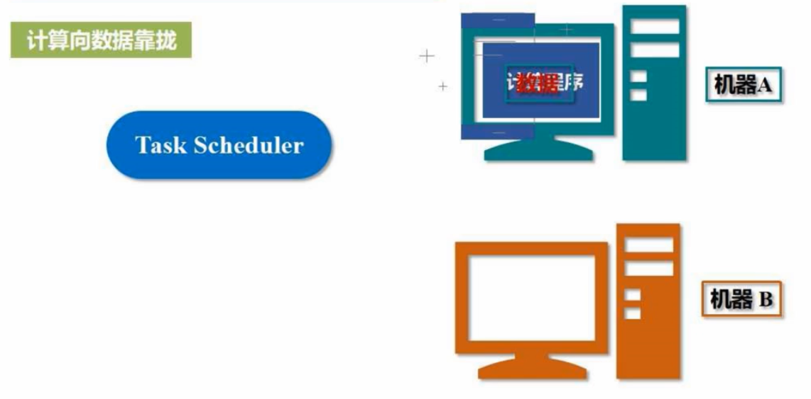
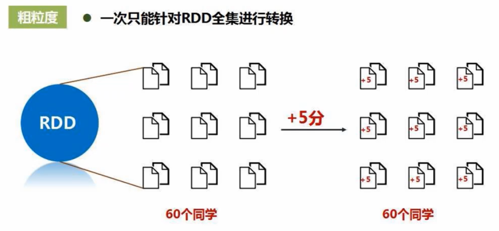
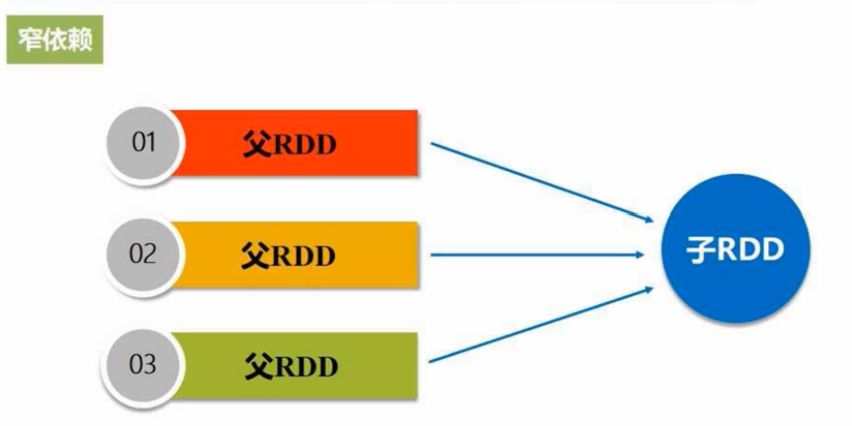
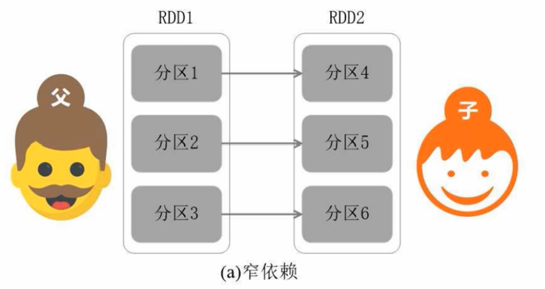
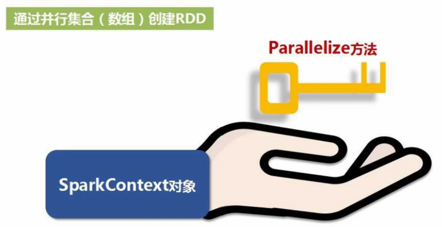
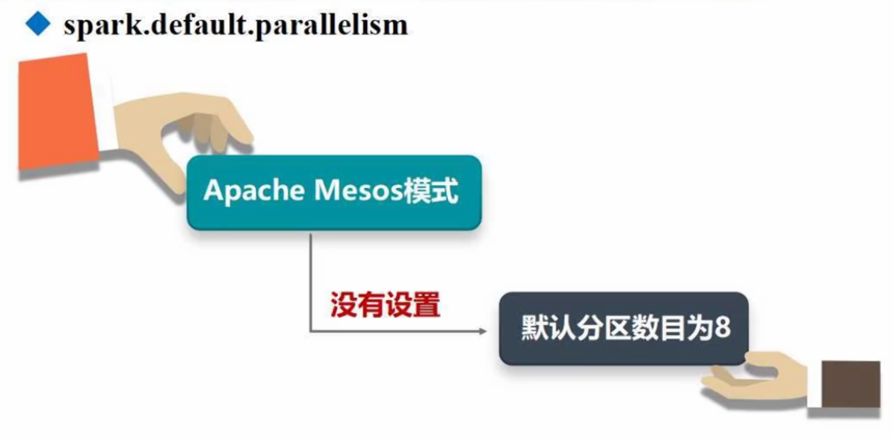
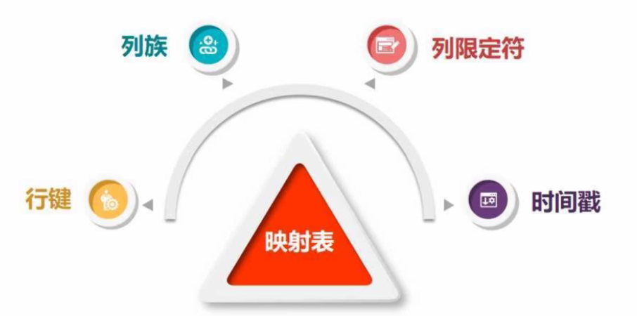

Spark编程基础-Python版本
第一章、基础概念
目前的主流大数据技术：Hadoop、Spark、Flink、Beam.
Hadoop
MapReduce
像写单机任务一样.
使用前提：任务必须满足可以分而治之.
YARN
Hadoop2.0出现.
统一调配资源，实现底层数据无缝共享.
Spark
全能选手.
Hadoop的缺点

有些不能转成Map和Reduce的业务无法使用Hadoop.
需要反复迭代，磁盘IO开销大.

磁盘IO，任务之间的衔接延迟高.
衔接延迟：3个Map任务全部结束才能执行REduce任务.
因此难以胜任多阶段的复杂任务.
Spark的优势
Spark本质上也属于MapReduce，但是不再局限于Map和Reduce这两个操作，还可以执行其它操作，比如groupby，filter，join等等，因此具有更强大的表达能力.

Spark可以将数据读到内存中进行操作，提升了迭代时的运行效率.
Spark使用了有向无环图的调度机制，使得相关的操作可以优化，从而很多操作可以进行流水线化处理.

对比Hadoop和Spark的读取和查询：Hadoop每次都要读写磁盘，而Spark可以直接在内存中完成，所以性能更好.
Spark和Hadoop的关系
Spark只是用来计算的，而存储仍然靠Hadoop中的HDFS。因此，Spark并不是取代Hadoop，而是取代Hadoop中的计算框架MapReduce.

Flink
与Spark是竞争关系.
Beam
一种编程接口，就可以翻译成不同(Hadoop, Spark)框架，想一统天下，但未果.
第二章、Spark的设计与运行原理
Spark的特点
运行速度快.

容易使用.
通用性.
运行模式多样.


对比Spark与Hadoop

Hadoop：

Spark：

…
Spark生态系统

需要生态系统的原因：


Spark的生态系统：


Spark的基本概念

RDD：数据可多可少，少时可以放一台机器，多了可以存放在很多台机器的内存中.
DAG：反映RDD之间的依赖关系
Executor：


Task：
Job：提交Application后，会被分解成多个作业.
Stage： 作业的基本调度单位，每个作业会被分解成多组任务，每组任务的集合就叫做Stage.
以上概念之间的关系如下：
Spark的架构设计

执行过程如下.
开始执行：
执行完毕：
or
Spark运行的基本流程

Driver节点创建一个指挥官，即SparkContext.
申请资源：
分配资源：
执行：


分发任务：
遵循”计算向数据靠拢”的原则.

执行完任务，返回结果：
RDD运行原理: 概念、操作和特性
在MapReduce中含有大量的序列化/反序列化过程，开销大
RDD的提供了抽象的数据结构，将一系列行为表达为转换处理：
不同的RDD转换之间形成依赖关系：
借助有向无环图表达依赖关系，避免了数据落磁盘，而是马上可以给另一个操作作为输入：
RDD可以存在单个机器上：
如果RDD很大，也可以分布式存储：
RDD本质上是一个只读的分区记录集合，不允许被改来改去：
如果要改，需要生成新的RDD：
比如，给每个学生加5分：
当然，加5分后得到的新的RDD也是只读的.
RDD的操作类型如下：
它们都是粗粒度的，只能对整体操作：


尽管如此受限，但Spark提供了丰富的转换操作，使得Spark几乎具有其它框架的所有操作：

Spark的执行过程：
注意，Spark中有一个惰性机制，即：前面的各种转换操作，并不是说立即执行，而是只有在触发动作操作后才从头开始执行，有点像tf的静态图机制.
RDD具有高效运算能力的3个原因.
天然的容错性：
RDD的运行原理:RDD之间的依赖关系

是否包含Shuffle操作是区分宽依赖和窄依赖的依据.
所谓Shuffle，中文是洗牌，下面的交叉线就是一种Shuffle：
如果发生了Shuffle，就是宽依赖，否则就是窄依赖.
具体来讲，窄依赖指的是以下两种情况：
1.一个父RDD对应一个子RDD
- 多个父RDD对应一个子RDD

举几个栗子：

而宽依赖指的是”一个父RDD对应一个RDD的多个分区”：
举几个栗子：
RDD的运行原理:阶段的划分以及RDD的运行过程

因为宽依赖不能进行流水线优化，所以才把宽依赖分成不同的阶段(Stage).
宽依赖之所以不能进行流水线优化，跟Spark的优化原理有关.
RDD的一次转换，就是一次fork和join的过程：fork负责将每个分区送到不同机器上并行执行，再提供join把每台机器上的结果组合起来得到结果.
fork&join操作一般是多次的：
举个栗子：
全校学生从北京飞到厦门，一种方案如下：
这个方案中，在上海的join操作存在无意义的等待，因此可以优化如下：不在上海停
这样时间从6小时变成了5小时，优化后的方案其实就对应了窄依赖，即：可以进行流水线优化.
如果现在条件变了，要求在上海之后，改为班长带1班飞…，那么各个同学就要从以男女为单位改成以班级为单位，于是发生了数据Shuffle，而只要哦发生Shuffle就一定会写磁盘，因此就无法进行流水线优化，这就对应了宽依赖：
以上就解释了为什么宽依赖为什么需要划分成多个阶段(Stage)进行处理.
那如何划分成多个阶段呢？
即：窄依赖可单独作为一个阶段，宽依赖划分成多个不同阶段(每个阶段是窄依赖的).
一个划分的栗子：
每一个阶段内部都没有Shuffle，都是窄依赖，可以流水线化处理，而阶段与阶段之间存在Shuffle，因而存在等待.
总结一下RDD的整个运行过程：
把写的代码交给框架，框架会转成DAG图，然后分成不同阶段，向右走，向上走.
Spark的部署和应用方式
可单机也可集群.
3种集群模式：

第三章、环境配置
在pyspark中运行代码


举个栗子：
启动时只写pyspark，则默认进入local[*]模式：


开发Spark独立应用程序
一个简单的栗子:
写完代码后，可以直接使用python运行：
也可以使用spark-submit提交应用程序:

一个调试小技巧：
Spark集群环境搭建
配置主节点：

配置从节点：
slave01和slave02是(从)主机的具体名称.
第一行完成Spark和Hdoop的挂接
第二行说明Hadoop相关配置信息的目录
第三行设置Spark管家节点(主节点)的ip地址(事先配置好的)
完成以上操作后：
开始启动，先启动Hadoop, 后启动Spark：

在浏览器输入访问地址即可进入：
使用完毕，关闭：
##在集群上运行Spark应用程序

- 使用Standalone集群管理器
启动&运行：
运行pyspark:
查看运行信息:
- 使用Hadoop YARN集群管理器
启动&运行:
运行pyspark:

查看运行信息：
查看整个集群的运行信息:
第四章、RDD编程
RDD编程，指的是对Spark Core进行编程.
由于Spark Core就是对RDD进行不断地转换，因此被称为RDD编程.
RDD编程基础如下：
接下来各个击破.
RDD创建
主要有以下两种RDD创建方式：
- 从本地加载数据


举个栗子：
sc是SparkContext对象，位于Master节点中.
在交互式环境中，系统已经默认创建好了一个SparkContext 对象，而单独一个py文件中，则需要自行导入.
第一行将本地的word.txt从磁盘加载进来，生成一个RDD（抽象结构）.

- 从分布式文件系统HDFS中加载数据


- 通过并行集合(数组)创建RDD

RDD操作：转换操作
所有这些转换操作构成了一张有向无环图DAG：
转化操作并不会发生真正的计算：
只有遇到动作操作时，才会发生真正的从头到尾的计算：
这被称为RDD转换操作的惰性机制.
常用的RDD转换操作如下：
- filter操作


- map操作


- flatMap
- groupByKey

- reduceByKey
对所有key相同的键值对做聚合操作.

RDD操作：行动操作

其中reduce的执行过程如下：

RDD持久化
看个栗子：
由于每遇到一个行动操作，就会从头到尾执行一次，所以在运行第3行和第4行时，都分别执行了第1行的操作，造成了重复生成相同的rdd.
所以可以将rdd持久化，即缓存下来：
常用持久化方法如下：
当不再需要持久化存储时，可以手动移除：
看个栗子：
RDD分区
分区的作用：
增加并行度
减少通信开销

分区的原则：
不同模式下的分区数：

而对于Standalone和YARN模式，分区数=max(集群中所有CPU核心数目的总和, 2).
设置分区的方法:
自定义分区的方法:
举个栗子：

之所以弄成键值对(值全为1)的形式，是因为partitionBY只能操作键值对.
最后保存的路径仅仅传入了一个目录，是因为分区后会形成10个分区，每个分区一个文件，所有在传入目录下会新生成共10个文件.
写完代码，就可以运行了：
##一个综合实例：词频统计
实现代码如下：
具体解释：


以上是在单机上进行的，当数据分布在多台机器上时，需要多机并行执行.
此时需要把Hadoop和Spark同时部署在同一个集群中，具体地，将集群中的某个节点既作为HDFS的存储节点，同时也作为Saprk的工作节点.

键值对RDD的创建
键值对RDD: RDD中的每一个元素都是一个键值对.


键值对RDD的转换操作

- reduceByKey
对所有key相同的键值对做聚合操作.
- groupByKey
对具有相同key的键值对进行分组，不进行聚合计算.
对比reduceByKey和groupByKey：

- keys ,values
把Pair(键值对)RDD 中的key(value)回形成一个新的RDD.

- sortByKey

对比sortByKey和sortBy：
前者只能根据key进行排序，而后者更灵活.
- mapValues
对键值对RDD中的每个value都应用一个函数，key不会发生变化.

- join
一个综合实例
文件数据读写
本地文件的读写：

分布式文件的读写：
HBase数据读写：HBase简介


HBase是Hadoop家族的一个组件，是一个分布式数据库，是构建在HDFS基础上的，也就是说，HBase是一个分布式数据库，但它的数据被保存在了底层的HDFS中.




在关系型数据库中，给定行和列(2维)就能够定位：
而在HBase中，则需要4维才能定位：


HBase数据读写：创建HBase表
安装HBase，然后先启动Hadoop，再启动HBase：

假设要创建的student表如下：
开始创建：
关系型数据可以一列直接写入，但HBase只能一个单元格一个单元格的写：
HBase数据读写：配置Spark


HBase数据读写：编写程序读取HBase数据


count统计总共有多少个键值对（行键：行键对应的值）.

HBase数据读写：编写程序向HBase写入数据